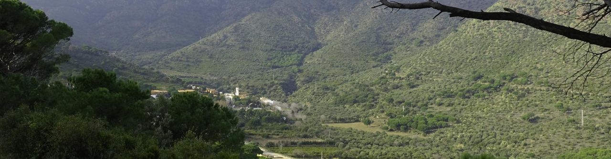

Ruta · Roses
Aquesta completa i exigent ruta en BTT pel Parc Natural del Cap de Creus ens endinsa en un territori dur, de colpidors paisatges resultat de la intervenció de l'home, del foc i del vent. Tot…